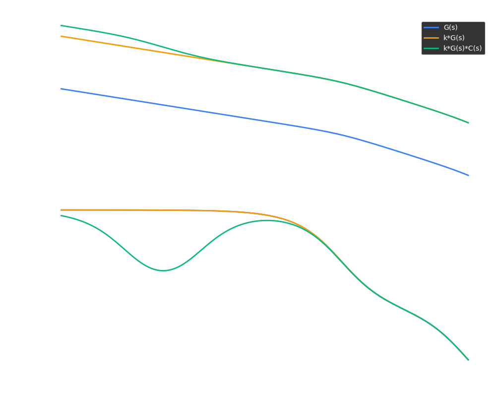
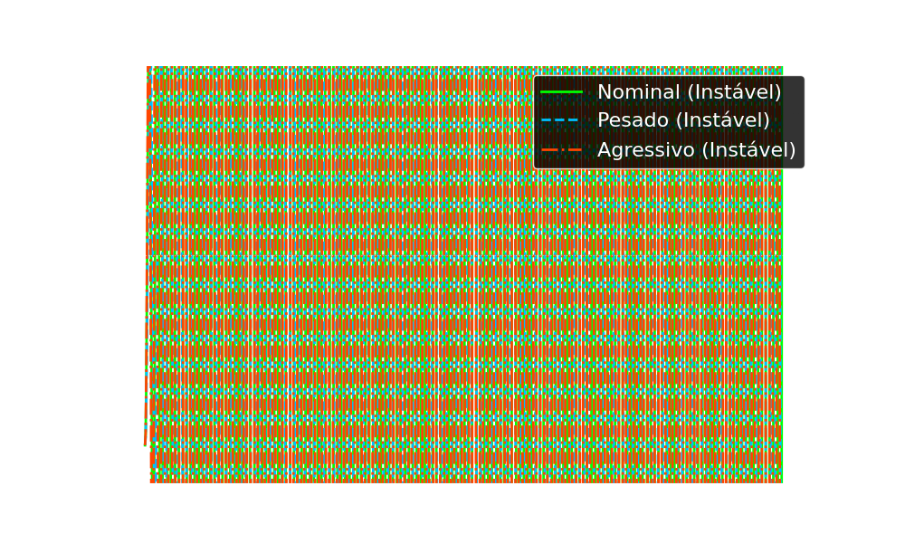
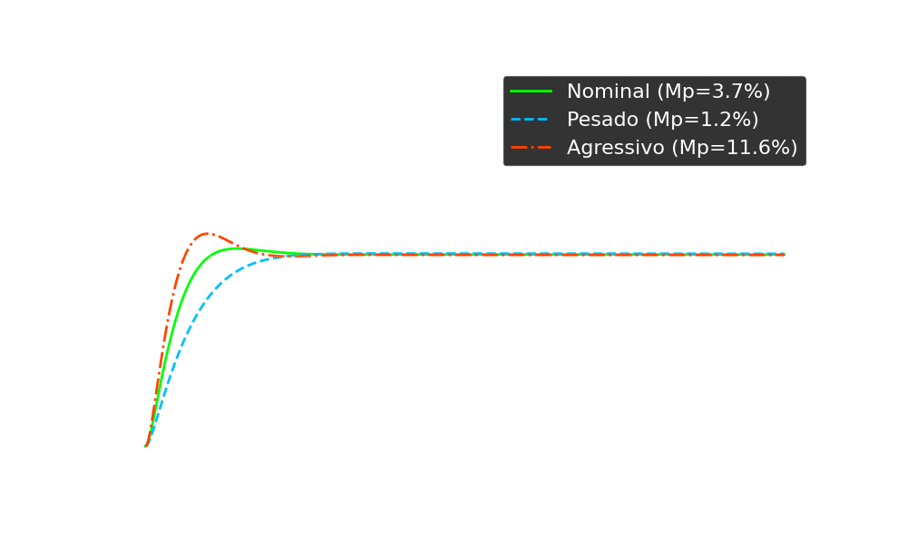
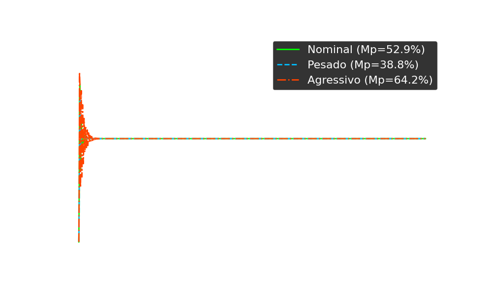

Servomecanismo
Projeto
Final
Análise e Controle de Sistemas Dinâmicos
Análise do Modelo
Matrizes de Estado e Função de Transferência
Forma Canônica Controlável
$$ A = \begin{bmatrix} 0 & 1 & 0 \\ 0 & 0 & 1 \\ 0 & -12540 & -963.2 \end{bmatrix} $$
$$ B = \begin{bmatrix} 0 \\ 0 \\ 1 \end{bmatrix} $$
$$ C = \begin{bmatrix} 1.2 & 0 & 0 \end{bmatrix} $$
Função de Transferência
$$ G(s) = \frac{1.2}{s(s^2 + 963.2s + 12540)} $$
Mapa de Polos
Estabilidade e Controlabilidade
Localização dos Polos
- 1 Polo na Origem ($s=0$)
- 2 Polos Reais Negativos (Estáveis)
Controlabilidade
O sistema é totalmente controlável ($Rank(C) = 3$). A tensão de entrada pode levar os estados a qualquer valor em tempo finito.
Validação em Malha Aberta
Resposta ao Degrau
Comportamento Integrador
A saída cresce linearmente (rampa) para uma entrada constante.
Isso valida matematicamente a presença do polo na origem ($1/s$), confirmando que o
sistema é do Tipo 1.
Interpretação Física
Significado dos Polos
Polo na Origem
Atua como um Integrador Puro.
Isso classifica o sistema como Tipo 1, garantindo erro zero de posição em
malha fechada.
Polo Mecânico (-13.2)
É o Polo Dominante.
Com uma constante de tempo $\tau_m \approx 75.7ms$, ele governa a inércia e a resposta
transitória.
Polo Elétrico (-950)
Dinâmica extremamente rápida ($\tau_e \approx 1.05ms$).
Impacta a estabilidade relativa em altas frequências.
Controlador Proporcional
Conceito e Locus das Raízes
Lei de Controle
$$ u(t) = K_p \cdot e(t) $$
Aumentar o ganho $K_p$ "endurece" o sistema, reduzindo o tempo de resposta, mas ao custo de reduzir o amortecimento.
Análise de Estabilidade
- Sistema estável para todo $K > 0$.
- Ganho elevado $\to$ Polos complexos conjugados.
- Trade-off clássico: Velocidade vs. Overshoot.
Resultados Proporcional
Definição do Ganho $K_p = 77.000$
Por que $K_p \approx 77.000$?
Muito lento. Erro dinâmico grande durante transitório.
Equilíbrio ideal. Atende $t_s \approx 0.6s$ e Overshoot $6\%$
Oscilação excessiva e perigosa para a mecânica.
Análise de Estabilidade
Diagrama de Nyquist (Proporcional)
Critério de Nyquist
Para estabilidade em malha fechada, o diagrama de contorno de $\mathcal{L}(s)$ não deve circundar o ponto crítico -1+j0 (para sistema estável em malha aberta).
Conclusão
O traçado passa distante do ponto crítico, confirmando que o sistema é Estável com margens de segurança adequadas para o ganho $K_p \approx 77k$.
Compensador Lag (Atraso)
Precisão em Regime Permanente
Estratégia
Aumentar o ganho DC sem alterar significativamente a resposta transitória (raízes dominantes).
z > p (Atenuação de Alta Freq.)
Otimização de Parâmetros
Busca Computacional da Solução Ideal
for a in a_values: [0.01, ..., 5.0] b = 10 * a for K in K_values: # Simula Step Response Mp = calc_overshoot(y) ts = calc_settling_time(y) ess_ramp = 1 / (K * 0.677) if (5 <= Mp <= 15 and 0.5 <= ts <= 1.0 and ess_ramp <= 0.01): resultados.append((a, b, K))
*O algoritmo testou milhares de combinações para garantir conformidade simultânea com 4 critérios rigorosos.
Solução Encontrada
Validação das Especificações
- Overshoot 6.46% (5-15%)
- Tempo de Acomodação 0.62s (0.5-1.0s)
- Erro de Rampa 1.35% (~ 1.0%)
Análise Frequencial
Diagrama de Bode e Lugar das Raízes
Diagrama de Bode
Lugar das Raízes
Compensador Lead (Avanço)
Teoria e Objetivos de Controle
Contexto: Compensação de Ganho
Para corrigir o erro de regime ($e_{ss} \approx 1\%$), utilizou-se um Compensador Lag (Dierson).
- Ganho Controlador ($K_{p}$): $77.000$
- Erro Rampa: $\approx 1.35\%$ (OK)
O Problema: Atraso de Fase
O compensador Lag introduz atraso de fase, tornando a resposta temporal lenta e prejudicando a estabilidade relativa (menor Margem de Fase).
Solução: Avanço de Fase (Lead)
- ✓ Adicionar fase positiva ao sistema ($+ \phi$).
- ✓ "Puxar" o Lugar das Raízes para a esquerda (maior estabilidade).
- ✓ Aumentar a largura de banda (Rapidez).
Estratégia de Design
Cancelamento de Polos e Alocação
Cancelamento exato do polo dominante da planta (-13.2).
Posicionado longe da origem para contribuir com fase positiva sem afetar a magnitude nas baixas frequências.
Efeito no Lugar das Raízes (Zoom)
Zoom mostrando o cancelamento do polo dominante pelo Zero do compensador.
Resultados Obtidos
Comparação de Desempenho Temporal

Performance Extrema
Conclusão do Design
O compensador Lead foi altamente eficaz para acelerar o sistema, reduzindo o tempo de resposta em quase 50% comparado ao controlador Proporcional, com um overshoot mínimo.
Solução Integrada
Controlador Lead-Lag: O melhor dos dois mundos
Combinação Estratégica
Unimos o ganho de baixa frequência do Lag (erro zero) com o avanço de fase do Lead (agilidade).
- • Lag: $z=0.1, p=0.01$ (Precisão)
- • Lead: $z=20, p=100$ (Velocidade)
Estabilidade Lead-Lag
Diagrama de Nyquist da Solução Final
Equilíbrio Perfeito
O diagrama mostra a combinação do alto ganho em baixa frequência (extensão da cauda para o infinito/longe) com a margem de segurança em média frequência (curva afastada do -1).
Controlador PID
Sintonia e Robustez
Sintonia Ziegler-Nichols
Método empírico de malha fechada. Encontram-se os ganhos críticos ($K_{cr}$, $P_{cr}$) que levam à oscilação sustentada para calibrar $K_p, T_i, T_d$.
Análise de Robustez
O projeto garante Margens de Ganho e Fase adequadas para suportar variações paramétricas (ex: aquecimento do motor alterando $R_a$ ou $K_m$ em $\pm 20\%$).

Estabilidade PID
Diagrama de Nyquist
Comportamento Robusto
A ação integral garante ganho infinito em DC (assíntota), enquanto a ação derivativa fornece avanço de fase crucial para contornar o ponto crítico com segurança.
Análise de Robustez
Comportamento sob incertezas paramétricas (±20%)
Proporcional
 Instável/Oscilatório no Cenário AgressivoLead-Lag
 Estável em todos os cenáriosPID
 Robusto e PrecisoConclusão: Enquanto o Proporcional sofre com variações no ganho da planta, os controladores compensados (Lead-Lag e PID) garantem a integridade do sistema mesmo nos piores casos ("Pesado" e "Agressivo").
Comparativo de Desempenho
| Controlador | Subida ($T_r$) | Overshoot | Erro Estacionário | Avaliação |
|---|---|---|---|---|
| Proporcional (P) | Médio | Alto | Baixo | Simples, mas oscilatório |
| Lead | Rápido | Médio | - | Melhor Transiente |
| PID | Ajustável | Baixo | Zero | Mais Robusto |
Análise Comparativa de Estabilidade
Sobreposição dos Diagramas de Nyquist
Interpretação
Observe como as curvas do Lead-Lag e PID contornam o ponto crítico (-1+j0) com maior margem de segurança (distância) em comparação ao Proporcional, garantindo robustez contra incertezas.
Conclusão do Projeto
A Jornada do Design
- 1. Proporcional: Garantiu velocidade, mas falhou na precisão.
- 2. Lag (Dierson): Introduziu o dipolo para zerar o erro de rampa.
- 3. Lead (Cintia): Cancelou o polo lento (-13.2) para resposta ideal.
Resultados Validados
Auditoria completa de consistência parametrica realizada entre Código, Relatório e Apresentação.
"Uma solução robusta, auditada e pronta para implementação."